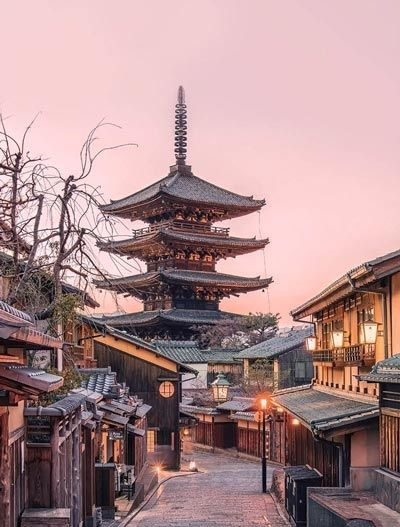

The Wonders of London
Posted on July 5, 2024 by Michael Brown

England, a part of the United Kingdom, is renowned for its rich history, cultural heritage, and
picturesque landscapes. From the bustling metropolis of London with its iconic landmarks like
the Tower of London and Buckingham Palace, to the tranquil countryside dotted with charming
villages and historic castles.
Experiencing Greece
Posted on July 3, 2024 by Sarah Lee
Greece, birthplace of democracy and mythology, enchants with its stunning islands like Santorini and
Mykonos, adorned with whitewashed buildings and azure seas. Discover ancient temples, savor Mediterranean
flavors, and immerse yourself in the lively spirit of Greek traditions.
Adventures in Japan
Posted on July 1, 2024 by Kevin White

Japan, where tradition meets innovation, offers a journey through ancient temples of Kyoto, futuristic
skyscrapers of Tokyo, and serene landscapes like Mount Fuji. Experience the art of tea ceremonies, taste
exquisite sushi, and witness the harmony of modernity and ancient rituals in this island nation.